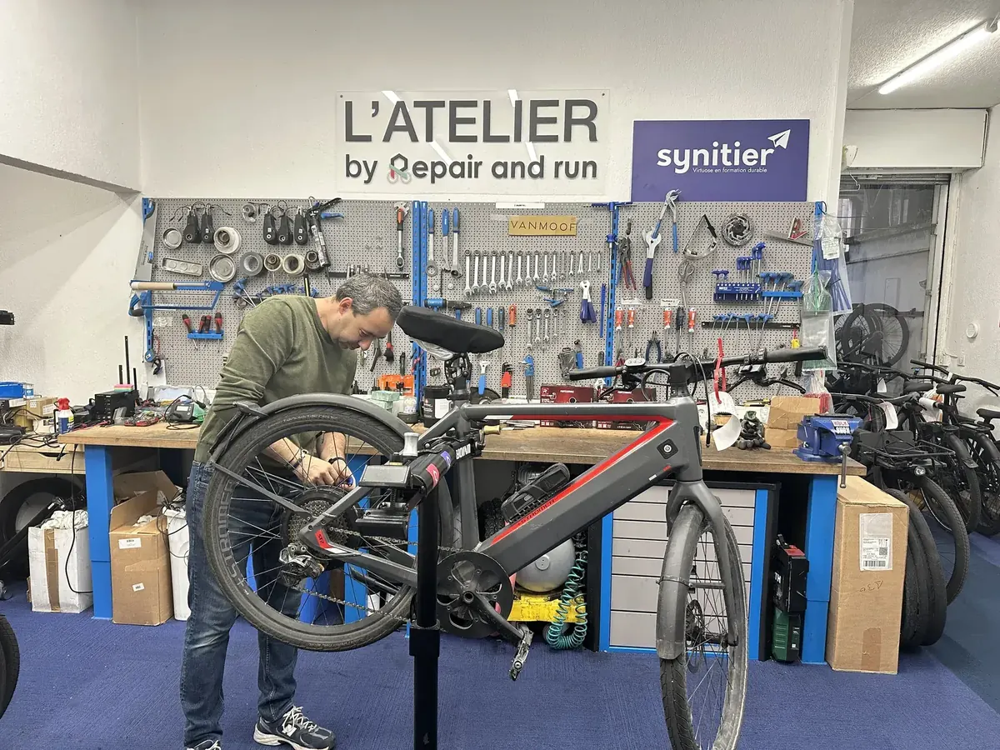
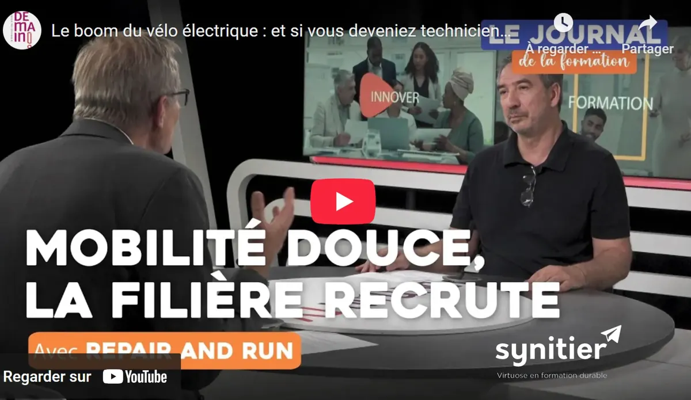

Ceux qui ont choisi Synitier
Des chiffres concrets et des témoignages authentiques pour vous aider à vous projeter.
Des résultats concrets
Ce que nos apprenants obtiennent après leur formation
Découvrez l'atelier de l'intérieur
Voyez concrètement ce que vous vivrez dans votre formation Synitier
Témoignages apprenants
Ils ont choisi Synitier pour se former : voici leur expérience
Apprenant en formation mécanique et électrique
Apprenant en reconversion professionnelle
Bientôt disponible
Bientôt disponible
Le mot du formateur

Le mot du responsable

Questions fréquentes
Aucun prérequis technique n'est nécessaire. Nos formations sont accessibles à tous, quel que soit votre parcours. Nos formateurs vous accompagnent pas à pas, depuis les bases jusqu'aux gestes techniques du métier.
Oui, tout à fait. Nos formations sont ouvertes aux demandeurs d'emploi. Elles sont finançables via le CPF, et si votre solde est insuffisant, France Travail peut compléter le financement grâce à une demande d'abondement. Nous vous accompagnons dans ces démarches.
Oui. Grâce à nos sessions individualisées, le planning de formation est adapté à vos disponibilités. Que vous travailliez à temps partiel, en horaires décalés ou en intérim, nous construisons un calendrier compatible avec votre activité professionnelle.
Nos sessions sont individualisées et personnalisées : nous adaptons le planning de formation en fonction de vos disponibilités. Vous travaillez à temps partiel ou vous réalisez des missions en intérim ? Pas de souci, le calendrier sera établi en fonction de vos disponibilités.
Nous travaillons par petits groupes pour garantir un accompagnement étroit, efficace et personnalisé. Chaque session accueille donc un nombre limité de stagiaires afin que chacun puisse pratiquer et progresser à son rythme.
Non, tous les outils et équipements professionnels sont mis à disposition par Synitier. Nos ateliers sont équipés de tout le matériel nécessaire pour travailler dans les conditions réelles du métier.
Oui, c'est même encouragé ! Travailler sur votre propre véhicule est un excellent moyen d'apprendre en situation concrète, en complément des cas pratiques prévus dans le programme.
Si votre budget CPF ne couvre pas l'intégralité du coût de la formation, plusieurs solutions peuvent être envisagées :
- Si vous êtes inscrit à France Travail, nous pouvons vous accompagner dans la réalisation d'une demande d'abondement afin de compléter votre financement.
- Si vous êtes salarié, votre employeur ou votre OPCO peut également participer au financement de votre formation.
- Vous avez aussi la possibilité de compléter le montant restant à charge, avec une solution de paiement en plusieurs fois sans frais.
Notre équipe reste disponible pour étudier avec vous la solution de financement la plus adaptée à votre situation.
Lors de votre inscription à la formation via le CPF, votre identité doit être vérifiée afin de sécuriser la démarche. Cette vérification se fait grâce à FranceConnect+.
Deux solutions sont possibles :
1️⃣ L'Identité Numérique La Poste
Vous pouvez créer votre identité numérique de deux façons :
- Depuis votre smartphone, en téléchargeant l'application L'Identité Numérique La Poste.
Tutoriel officiel – L'Identité Numérique La Poste - En vous rendant dans un bureau de poste, avec une pièce d'identité valide, où un conseiller pourra vous accompagner pour créer votre identité numérique.
2️⃣ France Identité
Si vous possédez la nouvelle carte nationale d'identité électronique et un smartphone compatible, vous pouvez également utiliser l'application France Identité.
Tutoriel officiel – France Identité
La création de votre identité numérique prend généralement quelques minutes et vous permettra ensuite de valider votre inscription à la formation en toute sécurité.
Si vous rencontrez des difficultés, notre équipe peut vous accompagner pas à pas pour vous aider dans ces démarches.
Que vous souhaitiez décrocher un poste en atelier, créer votre propre activité en tant qu'indépendant ou franchisé, nos formations délivrent les compétences clés pour se lancer. Des stages de perfectionnement en entreprise seront également possibles si vous le désirez à l'issue de votre formation.
Prêt à écrire votre propre histoire ?
Rejoignez les apprenants qui ont fait confiance à Synitier. Parlons de votre projet ensemble.
Nous contacter pour parler de votre projet